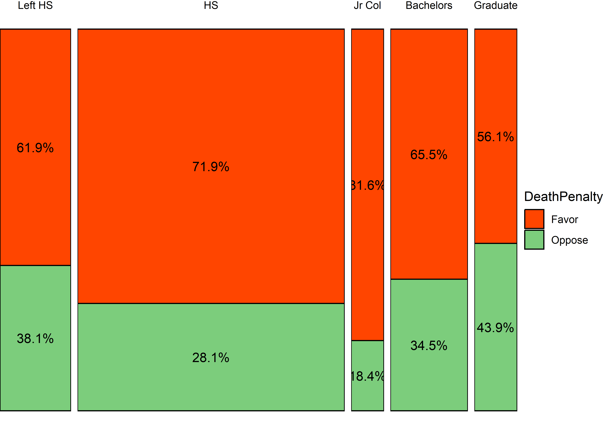
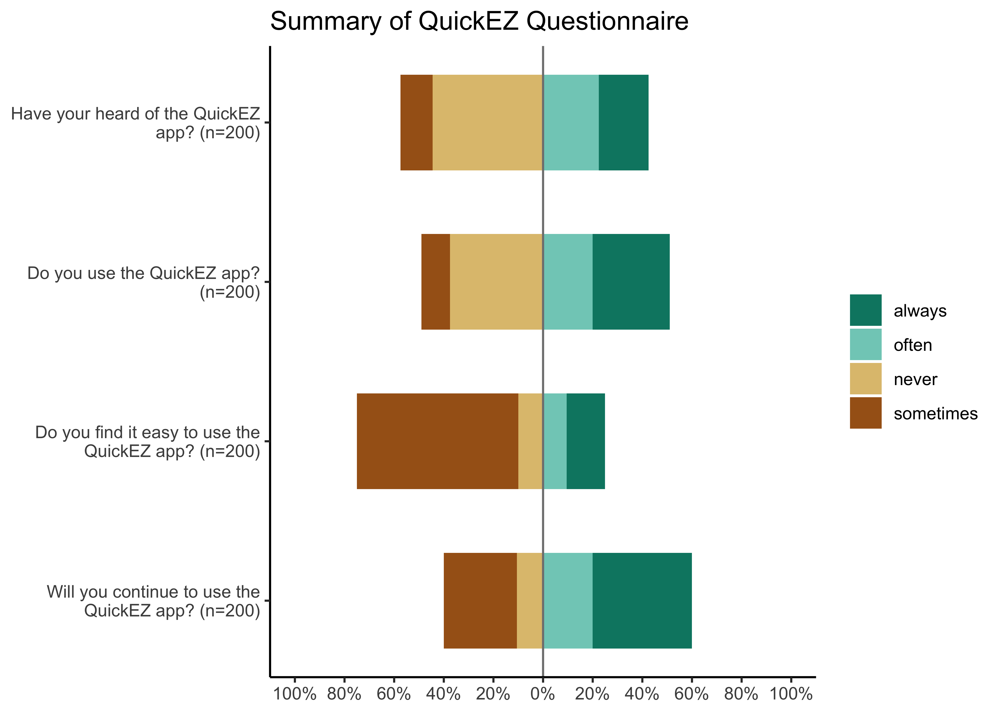
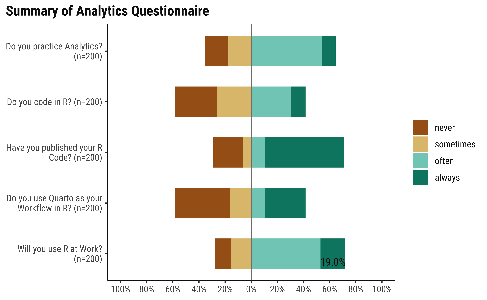

library(tidyverse)
library(mosaic) # Our trusted friend
library(GGally)
library(skimr)
library(vcd) # Michael Friendly's package, Visualizing Categorical Data
library(vcdExtra) # Categorical Data Sets
library(ggmosaic) # Mosaic Plots
library(resampledata) # More datasets
library(sjPlot) # Likert Scale Plots
library(sjlabelled) # Creating Labelled Data for Likert Plots
library(ggpubr) # Colours, Themes and new geometries in ggplot
library(ca) # Correspondence Analysis, for use some day
## Making Tables
library(kableExtra) # html styled tables
library(gt) # Making Cool Tables
library(patchwork) # To arrange plots on a grid and other things
## Plot Theme
theme_set(new = theme_classic())🐉 Visualizing Categorical Data
Proportions
Frequency Tables
Contingency Tables
Numerical Data in Groups
Margins
Likert Scale data
Bar Plots (for Contingency Tables)
Mosaic Plots
Balloon Plots
Pie Charts
Correspondence Analysis
Abstract
Types, Categories, and Counts
To recall, a categorical variable is one for which the possible measured or assigned values consist of a discrete set of categories, which may be ordered or unordered. Some typical examples are:
- Gender, with categories “Male,” “Female.”
- Marital status, with categories “Never married,” “Married,” “Separated,” “Divorced,” “Widowed.”
- Fielding position (in
baseballcricket), with categories “Slips,”Cover “,”Mid-off “Deep Fine Leg”, “Close-in”, “Deep”… - Side effects (in a pharmacological study), with categories “None,” “Skin rash,” “Sleep disorder,” “Anxiety,” . . ..
- Political attitude, with categories “Left,” “Center,” “Right.”
- Party preference (in India), with categories “BJP” “Congress,” “AAP,” “TMC”…
- Treatment outcome, with categories “no improvement,” “some improvement,” or “marked improvement.”
- Age, with categories “0–9,” “10–19,” “20–29,” “30–39,” . . . .
- Number of children, with categories 0, 1, 2, . . . .
As these examples suggest, categorical variables differ in the number of categories: we often distinguish binary variables (or dichotomous variables) such as Gender from those with more than two categories (called polytomous variables).
From the {vcd package} vignette:
The first thing you need to know is that categorical data can be represented in three different forms in R, and it is sometimes necessary to convert from one form to another, for carrying out statistical tests, fitting models or visualizing the results.
- Case Data
- Frequency Data
- Cross-Tabular Count Data
Let us first see examples of each.
From Michael Friendly Discrete Data Analysis and Visualization :
In many circumstances, data is recorded on each individual or experimental unit. Data in this form is called case data, or data in case form. Containing individual observations with one or more categorical factors, used as classifying variables. The total number of observations is
nrow(X), and the number of variables isncol(X).
class(Arthritis)
# Tibble as HTML for presentation
Arthritis %>%
head(10) %>%
kbl(caption = "Arthritis Treatments and Effects<br> First 10 Observations",centering = TRUE) %>%
kable_classic_2(html_font = "Cambria", full_width = F)[1] "data.frame"| ID | Treatment | Sex | Age | Improved |
|---|---|---|---|---|
| 57 | Treated | Male | 27 | Some |
| 46 | Treated | Male | 29 | None |
| 77 | Treated | Male | 30 | None |
| 17 | Treated | Male | 32 | Marked |
| 36 | Treated | Male | 46 | Marked |
| 23 | Treated | Male | 58 | Marked |
| 75 | Treated | Male | 59 | None |
| 39 | Treated | Male | 59 | Marked |
| 33 | Treated | Male | 63 | None |
| 55 | Treated | Male | 63 | None |
The Arthritis data set has three factors and two integer variables. One of the three factors Improved is an ordered factor.
- ID
- Treatment: a factor; Placebo or Treated
- Sex: a factor, M / F
- Age: integer
- Improved: Ordinal factor; None < Some < Marked
Each row in the Arthritis dataset is a separate case or observation.
Data in frequency form has already been tabulated and aggregated by counting over the (combinations of) categories of the table variables. When the data are in case form, we can always trace any observation back to its individual identifier or data record, since each row is a unique observation or case; the reverse, with the Frequency Form is rarely possible.
Frequency Data is usually a data frame, with columns of categorical variables and at least one column containing frequency or count information.
str(GSS)'data.frame': 6 obs. of 3 variables:
$ sex : Factor w/ 2 levels "female","male": 1 2 1 2 1 2
$ party: Factor w/ 3 levels "dem","indep",..: 1 1 2 2 3 3
$ count: num 279 165 73 47 225 191# Tibble as HTML for presentation
GSS %>%
kbl(caption = "General Social Survey",centering = TRUE) %>%
kable_classic_2(html_font = "Cambria", full_width = F)| sex | party | count |
|---|---|---|
| female | dem | 279 |
| male | dem | 165 |
| female | indep | 73 |
| male | indep | 47 |
| female | rep | 225 |
| male | rep | 191 |
Respondents in the GSS survey were classified by sex and party identification. As can be seen, there is a count for every combination of the two categorical variables, sex and party.
Table Form Data can be a matrix, array or table object, whose elements are the frequencies in an n-way table. The variable names (factors) and their levels are given by dimnames(X).
HairEyeColor, , Sex = Male
Eye
Hair Brown Blue Hazel Green
Black 32 11 10 3
Brown 53 50 25 15
Red 10 10 7 7
Blond 3 30 5 8
, , Sex = Female
Eye
Hair Brown Blue Hazel Green
Black 36 9 5 2
Brown 66 34 29 14
Red 16 7 7 7
Blond 4 64 5 8class(HairEyeColor)[1] "table"HairEyeColor is a “two-way” table, consisting of two tables, one for Sex = Female and the other for Sex = Male. The total number of observations is sum(X). The number of dimensions of the table is length(dimnames(X)), and the table sizes are given by sapply(dimnames(X), length). The data looks like a n-dimensional cube and needs n-way tables to represent.
sum(HairEyeColor)[1] 592dimnames(HairEyeColor)$Hair
[1] "Black" "Brown" "Red" "Blond"
$Eye
[1] "Brown" "Blue" "Hazel" "Green"
$Sex
[1] "Male" "Female"Hair Eye Sex
4 4 2 A good way to think of tabular data is to think of a Rubik’s Cube.

Rubik’s Cube and Categorical Data Tables
Each of the edges is an Ordinal Variable, each segment represents a level in the variable. So each face of the Cube represents two ordinal variables. Any segment is at the intersection of two (independent) levels of two variables, and the colour may be visualized as a count. This array of counts on a face is a 2D or 2-Way Table. ( More on this later )
Since we can only print 2D tables, we hold one face in front and the image we see is a 2-Way Table. Turning the Cube by 90 degrees gives us another face with 2 variables, with one variable in common with the previous face. If we consider two faces together, we get two 2-way tables, effectively allowing us to contemplate 3 categorical variables.
Multiple 2-Way tables can be flattened into a single long table that contains all counts for all combinations of categorical variables. This can be visualized as “opening up” and laying flat the Rubik’s cube, as with a cardboard model of it.
ftable(HairEyeColor) Sex Male Female
Hair Eye
Black Brown 32 36
Blue 11 9
Hazel 10 5
Green 3 2
Brown Brown 53 66
Blue 50 34
Hazel 25 29
Green 15 14
Red Brown 10 16
Blue 10 7
Hazel 7 7
Green 7 7
Blond Brown 3 4
Blue 30 64
Hazel 5 5
Green 8 8Finally, we may need to convert the (multiple) tables into a data frame or tibble:
## Convert the two tables into a data frame
HairEyeColor %>%
as_tibble()
# Tibble as HTML for presentation
HairEyeColor %>%
as_tibble() %>% # Convert
kbl(caption = "Hair Eye and Color") %>%
kable_classic_2(html_font = "Cambria", full_width = F)| Hair | Eye | Sex | n |
|---|---|---|---|
| Black | Brown | Male | 32 |
| Brown | Brown | Male | 53 |
| Red | Brown | Male | 10 |
| Blond | Brown | Male | 3 |
| Black | Blue | Male | 11 |
| Brown | Blue | Male | 50 |
| Red | Blue | Male | 10 |
| Blond | Blue | Male | 30 |
| Black | Hazel | Male | 10 |
| Brown | Hazel | Male | 25 |
| Red | Hazel | Male | 7 |
| Blond | Hazel | Male | 5 |
| Black | Green | Male | 3 |
| Brown | Green | Male | 15 |
| Red | Green | Male | 7 |
| Blond | Green | Male | 8 |
| Black | Brown | Female | 36 |
| Brown | Brown | Female | 66 |
| Red | Brown | Female | 16 |
| Blond | Brown | Female | 4 |
| Black | Blue | Female | 9 |
| Brown | Blue | Female | 34 |
| Red | Blue | Female | 7 |
| Blond | Blue | Female | 64 |
| Black | Hazel | Female | 5 |
| Brown | Hazel | Female | 29 |
| Red | Hazel | Female | 7 |
| Blond | Hazel | Female | 5 |
| Black | Green | Female | 2 |
| Brown | Green | Female | 14 |
| Red | Green | Female | 7 |
| Blond | Green | Female | 8 |
Most plots for Categorical Data ( as we shall see ) require that the data be converted into a Contingency Table ; the Statistical tests for Proportions ( the \(\chi^2\) test ) also needs Contingency Tables. The Frequency Table we encountered earlier is very close to being a full-fledged Contingency Table.
From Wolfram Alpha:
A contingency table, sometimes called a two-way frequency table, is a tabular mechanism with at least two rows and two columns used in statistics to present categorical data in terms of frequency counts. More precisely, an \(r \times c\) contingency table shows the observed frequency of two variables the observed frequencies of which are arranged into \(r\) rows and \(c\) columns. The intersection of a row and a column of a contingency table is called a cell.
In this section we understand how to make Contingency Tables from each of the three forms. We will use vcd, mosaic and the tidyverse packages for our purposes. Then we will see how it can be visualized.
# One Way Table ( one variable )
table(Arthritis$Treatment) # Contingency Table
Placebo Treated
43 41 # 1-way Contingency Table
table(Arthritis$Treatment) %>% addmargins() # Contingency Table with margins
Placebo Treated Sum
43 41 84 ###
# 2-Way Contingency Tables
# Choosing Treatment and Improved
table(Arthritis$Treatment, Arthritis$Improved) %>% addmargins()
None Some Marked Sum
Placebo 29 7 7 43
Treated 13 7 21 41
Sum 42 14 28 84# Choosing Treatment and Sex
table(Arthritis$Sex, Arthritis$Improved) %>% addmargins()
None Some Marked Sum
Female 25 12 22 59
Male 17 2 6 25
Sum 42 14 28 84We can use table() ( and also xtabs() ) to generate multi-dimensional tables too (More than 2-way) These will be printed out as a series of 2D tables, one for each value of the “third” parameter. We can then flatten this set of tables using ftable() and add margins to convert into a Contingency Table:
mytable <- table(Arthritis$Treatment, Arthritis$Sex, Arthritis$Improved)
mytable, , = None
Female Male
Placebo 19 10
Treated 6 7
, , = Some
Female Male
Placebo 7 0
Treated 5 2
, , = Marked
Female Male
Placebo 6 1
Treated 16 5# Now flatten
ftable(mytable) None Some Marked
Placebo Female 19 7 6
Male 10 0 1
Treated Female 6 5 16
Male 7 2 5ftable(mytable) %>% addmargins() Sum
19 7 6 32
10 0 1 11
6 5 16 27
7 2 5 14
Sum 42 14 28 84A bit strange that the column labels disappear in the ftable when margins are added…
The vcd ( Visualize Categorical Data ) package by Michael Friendly has a convenient function to create Contingency Tables: structable(); this function produces a ‘flat’ representation of a high-dimensional contingency table constructed by recursive splits (similar to the construction of mosaic charts/graphs). structable tends to render flat tables, of the kind that can be thought of as a “text representation” of the vcd::mosaic plot:
The arguments of structable are:
- a formula \(y + p \sim x + z\) which shows which variables are to be included as columns and rows respectively on a table
- a
dataargument, which can indicate adata frame
# Three Way!!
arth_vcd <- vcd::structable(data = Arthritis, Treatment ~ Improved + Sex)
arth_vcd
class(arth_vcd) Treatment Placebo Treated
Improved Sex
None Female 19 6
Male 10 7
Some Female 7 5
Male 0 2
Marked Female 6 16
Male 1 5
[1] "structable" "ftable" # With Margins
arth_vcd %>% as.matrix() %>% addmargins()
# We can convert this to a tibble, unlike the `table` earlier!
arth_vcd %>% as.matrix() %>% addmargins() %>% as_tibble() Treatment
Improved_Sex Placebo Treated Sum
None_Female 19 6 25
None_Male 10 7 17
Some_Female 7 5 12
Some_Male 0 2 2
Marked_Female 6 16 22
Marked_Male 1 5 6
Sum 43 41 84# HairEyeColor is in multiple table form
# structable flattens these into one, as for a mosaic chart
HairEyeColor
vcd::structable(HairEyeColor), , Sex = Male
Eye
Hair Brown Blue Hazel Green
Black 32 11 10 3
Brown 53 50 25 15
Red 10 10 7 7
Blond 3 30 5 8
, , Sex = Female
Eye
Hair Brown Blue Hazel Green
Black 36 9 5 2
Brown 66 34 29 14
Red 16 7 7 7
Blond 4 64 5 8 Eye Brown Blue Hazel Green
Hair Sex
Black Male 32 11 10 3
Female 36 9 5 2
Brown Male 53 50 25 15
Female 66 34 29 14
Red Male 10 10 7 7
Female 16 7 7 7
Blond Male 3 30 5 8
Female 4 64 5 8UCBAdmissions is already in Frequency Form i.e. a Contingency Table. But it is a set of (two-way) Contingency Tables:
UCBAdmissions
vcd::structable(UCBAdmissions)
structable(UCBAdmissions) %>% as.matrix() %>% addmargins(), , Dept = A
Gender
Admit Male Female
Admitted 512 89
Rejected 313 19
, , Dept = B
Gender
Admit Male Female
Admitted 353 17
Rejected 207 8
, , Dept = C
Gender
Admit Male Female
Admitted 120 202
Rejected 205 391
, , Dept = D
Gender
Admit Male Female
Admitted 138 131
Rejected 279 244
, , Dept = E
Gender
Admit Male Female
Admitted 53 94
Rejected 138 299
, , Dept = F
Gender
Admit Male Female
Admitted 22 24
Rejected 351 317 Gender Male Female
Admit Dept
Admitted A 512 89
B 353 17
C 120 202
D 138 131
E 53 94
F 22 24
Rejected A 313 19
B 207 8
C 205 391
D 279 244
E 138 299
F 351 317 Gender
Admit_Dept Male Female Sum
Admitted_A 512 89 601
Admitted_B 353 17 370
Admitted_C 120 202 322
Admitted_D 138 131 269
Admitted_E 53 94 147
Admitted_F 22 24 46
Rejected_A 313 19 332
Rejected_B 207 8 215
Rejected_C 205 391 596
Rejected_D 279 244 523
Rejected_E 138 299 437
Rejected_F 351 317 668
Sum 2691 1835 4526Note that structable does not permit the adding of margins directly; it needs to be converted to a matrix for addmargins() to do its work.
I think this is the simplest and most elegant way of obtaining Contingency Tables:
# One Way Table
mosaicCore::tally( ~ substance, data = HELPrct, margins = TRUE)
# Two-Way Tables
# Two ways of producing the same result
tally( sex ~ substance, data = HELPrct, margins = TRUE)
tally(~ sex | substance, data = HELPrct, margins = TRUE)substance
alcohol cocaine heroin Total
177 152 124 453 substance
sex alcohol cocaine heroin
female 36 41 30
male 141 111 94
Total 177 152 124 substance
sex alcohol cocaine heroin
female 36 41 30
male 141 111 94
Total 177 152 124So far these packages give Contingency Tables that are easy to see for humans; some of these structures are also capable being passed directly to commands such as stats::chisq.test() or janitor::chisq.test().
Often we need Contingency Tables that are in tibble form and we need to perform some data processing using dplyr to get there.
Doing this with the tidyverse set of packages may seem counter-intuitively long-winded, but the workflow is easily understandable.
First we develop the counts:
diamonds %>% count(cut)
diamonds %>% count(clarity)
diamonds %>%
group_by(cut, clarity) %>%
dplyr::summarise( count = n())We need to have the individual levels of cut as rows and the individual levels of clarity as columns. This means that we need to pivot this from “long” to wide” to obtain a Contingency Table:
diamonds %>%
group_by(cut, clarity) %>%
dplyr::summarise( count = n()) %>%
pivot_wider(id_cols = cut,
names_from = clarity,
values_from = count) %>%
# Now add the row and column totals using the `janitor` package
janitor::adorn_totals(where = c("row", "col")) %>%
# Recover to tibble since janitor gives a "tabyl" format ( which can be useful too !)
as_tibble()
Let us now examine the various kinds of plots we can make with Categorical Data. We will start with simple Bar plots, then move to plotting entire Contingency Tables, and then look Balloon Plots as an alternative. Finally we will look at a special case of survey data and look at Likert Plots.
Simple Bar Plots
We have already seen bar plots, which allow us to plot counts of categorical data. These can be used for say 2 or 3 Categorical variables, with not too many levels. However, for more complex data, if there are a large number of categorical variables, or if the categorical variables have many levels, the bar plot is not adequate. Now that we know how to create Contingency Tables, we can use these to create plots for such complex data.
From Michael Friendly:
The familiar techniques for displaying raw data are often disappointing when applied to categorical data. The simple scatterplot, for example, widely used to show the relation between quantitative response and predictors, when applied to discrete variables, gives a display of the category combinations, with all identical values overplotted, and no representation of their frequency. (AV: Scatter plots do not do counting internally!)
Instead, frequencies of categorical variables are often best represented graphically using areas rather than as position along a scale. Using the visual attribute:
\[\pmb{area \sim frequency}\]
allows creating novel graphical displays of frequency data for special circumstances.
Let us not look at some sample plots that embody this area-frequency principle. A mosaic plot is basically an area-proportional visualization of (typically observed) frequencies, consisting of tiles (corresponding to the cells) created by vertically and horizontally splitting a rectangle recursively. Thus, the area of each tile is proportional to the corresponding cell entry given the dimensions of previous splits.
The vcd::mosaic() function needs the data in contingency table form. We will use our vcd::structable() function to construct one:
arthritis_table <- vcd::structable(~ Treatment + Improved, data = Arthritis)
arthritis_table
vcd::mosaic(arthritis_table,
gp = shading_max,
main = "Arthritis Treatment Dataset") Improved None Some Marked
Treatment
Placebo 29 7 7
Treated 13 7 21
data("GSS2002", package = "resampledata")
gss2002 <- GSS2002 %>%
# select two categorical variables from the dataset
dplyr::select(Education, DeathPenalty) %>%
drop_na(Education, DeathPenalty)
gss_table <- tally(DeathPenalty ~ Education, data = gss2002)
gss_table %>% addmargins() Education
DeathPenalty Left HS HS Jr Col Bachelors Graduate Sum
Favor 117 511 71 135 64 898
Oppose 72 200 16 71 50 409
Sum 189 711 87 206 114 1307vcd::mosaic(gss_table, gp = shading_hsv)
This is perhaps the simplest way, but does use a different package and also does not use the formula notation: there is no gf_mosaic command yet!
#library(ggmosaic)
ggplot(data = gss2002) +
geom_mosaic(aes(x = product(DeathPenalty, Education),
fill = DeathPenalty))
This needs quite some work, to convert the Contingency Table into a mosaic plot; perhaps not the most intuitive of methods either. This code has been developed using this Stackoverflow post.
# Reference
# https://stackoverflow.com/questions/19233365/how-to-create-a-marimekko-mosaic-plot-in-ggplot2
gss_summary <- gss2002 %>%
dplyr::group_by(Education, DeathPenalty) %>%
dplyr::summarise(count = n()) %>% # This is good for a chisq test
# Data is still grouped by `Education`
# Add two more columns to facilitate mosaic Plot
# These two columns are quite unusual...
mutate(edu_count = sum(count),
edu_prop = count / sum(count)) %>%
ungroup()
gss_summary# This works but is not very intuitive...
gf_col(edu_prop ~ Education, data = gss_summary,
width = ~ edu_count, # Not typically used in a column chart
fill = ~ DeathPenalty,
stat = "identity",
position = "fill",
color = "black") %>%
gf_text(edu_prop ~ Education,
label = ~ scales::percent(edu_prop),
position = position_stack(vjust = 0.5)) %>%
gf_facet_grid(~ Education,
scales = "free_x",
space = "free_x") %>%
gf_theme(scale_fill_manual(values = c("orangered", "palegreen3"))) %>%
gf_theme(theme_void())
There is another visualization of Categorical Data, called a Balloon Plot. We will use the housetasks dataset from the package ggpubr. This data is already in Contingency Table form (without the margin totals)!
housetasks <- read.delim(
system.file("demo-data/housetasks.txt",
package = "ggpubr"), row.names = 1)
head(housetasks, 4)
ggpubr::ggballoonplot(housetasks, fill = "value") +
scale_fill_viridis_c(option = "C") +
labs(title = "A Balloon Plot for Categorical Data")
And repeat with the familiar HairEyeColor dataset:
df <- as_tibble(HairEyeColor)
df
ggballoonplot(df, x = "Hair", y = "Eye", size = "n",
fill = "n",
ggtheme = theme_bw()) +
scale_fill_viridis_c(option = "C") +
labs(title = "Balloon Plot")
# Balloon Plot with facetting
ggballoonplot(df, x = "Hair", y = "Eye", size = "n",
fill = "n", facet.by = "Sex",
ggtheme = theme_bw()) +
scale_fill_viridis_c(option = "C") +
labs(title = "Balloon Plot with Facetting",
subtitle = "Hair and Eye Color")

Note the somewhat different syntax with ggballoonplot: the variable names are enclosed in quotes.
Balloon Plots work because they use color and size aesthetics to represent categories and counts respectively.
In many business situations, we perform say customer surveys to get Likert Scale data, where several respondents rate a product or a service on a scale of Very much like, somewhat like, neutral, Dislike and Very much dislike, for example.
A fictitious QuickEZ app
We are a start-up that has an app called QuickEZ for delivery of groceries. We conduct a survey of 200 people at a local store.
- “Have your heard of the QuickEZ app?”
- “Do you use the QuickEZ app?”
- “Do you find it easy to use the QuickEZ app?”
- “Will you continue to use the QuickEZ app?”
each to be answered on a scale of : “always”, “often”, “never”, “sometimes”.
Such data may look for example as follows:
tibble [200 × 4] (S3: tbl_df/tbl/data.frame)
$ q1: int [1:200] 4 4 3 2 1 1 2 3 1 2 ...
..- attr(*, "label")= Named chr "Have your heard of the QuickEZ app?"
.. ..- attr(*, "names")= chr "q1"
..- attr(*, "labels")= Named num [1:4] 1 2 3 4
.. ..- attr(*, "names")= chr [1:4] "always" "often" "never" "sometimes"
$ q2: int [1:200] 2 3 2 3 1 3 4 3 1 1 ...
..- attr(*, "label")= Named chr "Do you use the QuickEZ app?"
.. ..- attr(*, "names")= chr "q2"
..- attr(*, "labels")= Named num [1:4] 1 2 3 4
.. ..- attr(*, "names")= chr [1:4] "always" "often" "never" "sometimes"
$ q3: int [1:200] 4 4 1 4 3 4 2 4 4 4 ...
..- attr(*, "label")= Named chr "Do you find it easy to use the QuickEZ app?"
.. ..- attr(*, "names")= chr "q3"
..- attr(*, "labels")= Named num [1:4] 1 2 3 4
.. ..- attr(*, "names")= chr [1:4] "always" "often" "never" "sometimes"
$ q4: int [1:200] 4 1 2 1 4 4 2 1 4 4 ...
..- attr(*, "label")= Named chr "Will you continue to use the QuickEZ app?"
.. ..- attr(*, "names")= chr "q4"
..- attr(*, "labels")= Named num [1:4] 1 2 3 4
.. ..- attr(*, "names")= chr [1:4] "always" "often" "never" "sometimes"Such data is also a form of Categorical data and we need to count and plot counts for each of the survey questions. Such a plot is called a Likert plot and it looks like this:

Based on this chart, since it looks like about half the survey respondents have not heard of our app, we need more publicity, and many do not find it easy to use 😿, so we have serious re-design and user testing to do !! But at least those who have managed to get past the hurdles are stating they will continue to use the app, so it does the job, but we can make it easier to use.
Here is another example of Likert data from the healthcare industry.
efc is a German data set from a European study titled EUROFAM study, on family care of older people. Following a common protocol, data were collected from national samples of approximately 1,000 family carers (i.e. caregivers) per country and clustered into comparable subgroups to facilitate cross-national analysis. The research questions in this EUROFAM study were:
To what extent do family carers of older people use support services or receive financial allowances across Europe? What kind of supports and allowances do they mainly use?
What are the main difficulties carers experience accessing the services used? What prevents carers from accessing unused supports that they need? What causes them to stop using still-needed services?
In order to improve support provision, what can be understood about the service characteristics considered crucial by carers, and how far are these needs met? and,
Which channels or actors can provide the greatest help in underpinning future policy efforts to improve access to services/supports?
We will select the variables from the efc data set that related to coping (on part of care-givers) and plot their responses after inspecting them:
```{r}
#| label: efc_data
#| layout-nrow: 2
#| column: body-outset-right
data(efc,package = "sjPlot")
efc %>%
select(dplyr::contains("cop")) %>%
head(20)
efc %>%
select(dplyr::contains("cop")) %>%
str()
```'data.frame': 908 obs. of 9 variables:
$ c82cop1: num 3 3 2 4 3 2 4 3 3 3 ...
..- attr(*, "label")= chr "do you feel you cope well as caregiver?"
..- attr(*, "labels")= Named num [1:4] 1 2 3 4
.. ..- attr(*, "names")= chr [1:4] "never" "sometimes" "often" "always"
$ c83cop2: num 2 3 2 1 2 2 2 2 2 2 ...
..- attr(*, "label")= chr "do you find caregiving too demanding?"
..- attr(*, "labels")= Named num [1:4] 1 2 3 4
.. ..- attr(*, "names")= chr [1:4] "Never" "Sometimes" "Often" "Always"
$ c84cop3: num 2 3 1 3 1 3 4 2 3 1 ...
..- attr(*, "label")= chr "does caregiving cause difficulties in your relationship with your friends?"
..- attr(*, "labels")= Named num [1:4] 1 2 3 4
.. ..- attr(*, "names")= chr [1:4] "Never" "Sometimes" "Often" "Always"
$ c85cop4: num 2 3 4 1 2 3 1 1 2 2 ...
..- attr(*, "label")= chr "does caregiving have negative effect on your physical health?"
..- attr(*, "labels")= Named num [1:4] 1 2 3 4
.. ..- attr(*, "names")= chr [1:4] "Never" "Sometimes" "Often" "Always"
$ c86cop5: num 1 4 1 1 2 3 1 1 2 1 ...
..- attr(*, "label")= chr "does caregiving cause difficulties in your relationship with your family?"
..- attr(*, "labels")= Named num [1:4] 1 2 3 4
.. ..- attr(*, "names")= chr [1:4] "Never" "Sometimes" "Often" "Always"
$ c87cop6: num 1 1 1 1 2 2 2 1 1 1 ...
..- attr(*, "label")= chr "does caregiving cause financial difficulties?"
..- attr(*, "labels")= Named num [1:4] 1 2 3 4
.. ..- attr(*, "names")= chr [1:4] "Never" "Sometimes" "Often" "Always"
$ c88cop7: num 2 3 1 1 1 2 4 2 3 1 ...
..- attr(*, "label")= chr "do you feel trapped in your role as caregiver?"
..- attr(*, "labels")= Named num [1:4] 1 2 3 4
.. ..- attr(*, "names")= chr [1:4] "Never" "Sometimes" "Often" "Always"
$ c89cop8: num 3 2 4 2 4 1 1 3 1 1 ...
..- attr(*, "label")= chr "do you feel supported by friends/neighbours?"
..- attr(*, "labels")= Named num [1:4] 1 2 3 4
.. ..- attr(*, "names")= chr [1:4] "never" "sometimes" "often" "always"
$ c90cop9: num 3 2 3 4 4 1 4 3 3 3 ...
..- attr(*, "label")= chr "do you feel caregiving worthwhile?"
..- attr(*, "labels")= Named num [1:4] 1 2 3 4
.. ..- attr(*, "names")= chr [1:4] "never" "sometimes" "often" "always"The coping related variables have responses on the Likert Scale (1,2,3,4) which correspond to (never, sometimes, often, always), and each variable also has a label defining each variable. The labels are actually ( and perhaps usually ) the questions in the survey.
We can plot this data using the plot_likert function from package sjPlot:
efc %>% select(dplyr::contains("cop")) %>%
sjPlot::plot_likert(title = "Caregiver Survey from EUROFAM")
Many questions here have strong negative responses. This may indicate that policy and publicity related efforts may be required.
Colours and Orientation in the Likert Plot
One could prefer (as I do) that “often” and “always” scores should be toward the right and “sometimes” and “never” scores towards the left. One can do this within the plot_likert command using:
plot_likert(..., reverse.scale = TRUE)
If you want the colours to be reversed, then…
plot_likert(..., reverse.colors = TRUE)
Try these options now in your Console! (Note the American spelling color)
Note how the y-axis has been populated with Survey Questions: this is an example of a labelled dataset, where not only do the variables have names i.e. column names, but also have longish text labels that add information to the data variables. The data values ( i.e scores) in the columns is also labelled as per the the Likert scale (Like/Dislike/Strongly Dislike OR never/sometimes/often/always) etc. These Likert scores are usually a set of contiguous integers.
Variable Labels and Value Labels
Variable label is human readable description of the variable. R supports rather long variable names and these names can contain even spaces and punctuation but short variables names make coding easier. Variable label can give a nice, long description of variable. With this description it is easier to remember what those variable names refer to.
Value labels are similar to variable labels, but value labels are descriptions of the values a variable can take. Labeling values means we don’t have to remember if 1=Extremely poor and 7=Excellent or vice-versa. We can easily get dataset description and variables summary with info function.
Let us manually create one such dataset, since this is a common-enough situation1 that we have survey data and then have to label the variables and the values before plotting. We will use the R package sjlabelled to label our data.2.
#library(sjlabelled)
variable_labels <- c("Do you practice Analytics?",
"Do you code in R?",
"Have you published your R Code?",
"Do you use Quarto as your Workflow in R?",
"Will you use R at Work?")
value_labels = c("never", "sometimes","often","always") #numerically 1:4
my_survey_data <-
# Create toy survey data
# 200 responses to 5 questions
# responses on Likert Scale
# 1:4 = "never", "sometimes","often","always")
tibble(q1 = mosaic::sample(1:4, replace = TRUE, size = 200,
prob = c(0.2, 0.2, 0.5, 0.1)),
q2 = mosaic::sample(1:4, replace = TRUE, size = 200,
prob = c(0.3, 0.3, 0.3, 0.1)),
q3 = mosaic::sample(1:4, replace = TRUE, size = 200,
prob = c(0.2, 0.1, 0.1, 0.6)),
q4 = mosaic::sample(1:4, replace = TRUE, size = 200,
prob = c(0.4, 0.2, 0.1, 0.3)),
q5 = mosaic::sample(1:4, replace = TRUE, size = 200,
prob = c(0.1, 0.2, 0.5, 0.2))) %>%
# Set VARIABLE labels
sjlabelled::set_label(x = .,
label = variable_labels) %>%
# Now set VALUE labels
sjlabelled::set_labels(x = ., labels = value_labels)
str(my_survey_data)
plot_likert(my_survey_data,
title = "Summary of Analytics Questionnaire",
reverse.scale = TRUE,# Reverse score values on plot
reverse.colors = FALSE, # let the colors be
show.prc.sign = TRUE, # Show percentage sign
legend.pos = "bottom")tibble [200 × 5] (S3: tbl_df/tbl/data.frame)
$ q1: int [1:200] 4 3 3 1 3 1 3 3 3 4 ...
..- attr(*, "label")= Named chr "Do you practice Analytics?"
.. ..- attr(*, "names")= chr "q1"
..- attr(*, "labels")= Named num [1:4] 1 2 3 4
.. ..- attr(*, "names")= chr [1:4] "never" "sometimes" "often" "always"
$ q2: int [1:200] 1 1 2 1 2 1 3 3 1 3 ...
..- attr(*, "label")= Named chr "Do you code in R?"
.. ..- attr(*, "names")= chr "q2"
..- attr(*, "labels")= Named num [1:4] 1 2 3 4
.. ..- attr(*, "names")= chr [1:4] "never" "sometimes" "often" "always"
$ q3: int [1:200] 4 4 4 3 4 1 4 4 2 3 ...
..- attr(*, "label")= Named chr "Have you published your R Code?"
.. ..- attr(*, "names")= chr "q3"
..- attr(*, "labels")= Named num [1:4] 1 2 3 4
.. ..- attr(*, "names")= chr [1:4] "never" "sometimes" "often" "always"
$ q4: int [1:200] 2 1 1 2 1 4 3 2 4 3 ...
..- attr(*, "label")= Named chr "Do you use Quarto as your Workflow in R?"
.. ..- attr(*, "names")= chr "q4"
..- attr(*, "labels")= Named num [1:4] 1 2 3 4
.. ..- attr(*, "names")= chr [1:4] "never" "sometimes" "often" "always"
$ q5: int [1:200] 1 2 2 1 3 1 1 3 4 4 ...
..- attr(*, "label")= Named chr "Will you use R at Work?"
.. ..- attr(*, "names")= chr "q5"
..- attr(*, "labels")= Named num [1:4] 1 2 3 4
.. ..- attr(*, "names")= chr [1:4] "never" "sometimes" "often" "always"
It seems many people in the survey plan to use R at work!! And have published R code as well. But Quarto seems to have mixed results! But of course this is a toy dataset!!
So there we are with Categorical data analysis and plots!
There are a few other plots with this type of data, which are useful in very specialized circumstances. One example of this is the agreement plot which captures the agreement between two (sets) of evaluators, on ratings given on a shared ordinal scale to a set of items. An example from the field of medical diagnosis is the opinions of two specialists on a common set of patients. However, that is for a more advanced course!
How are the bar plots for categorical data different from histograms? Why don’t “regular” scatter plots simply work for Categorical data? Discuss!
There are quite a few things we can do with Qualitative/Categorical data:
- Make simple bar charts with colours and facetting
- Make Contingency Tables for a \(X^2\)-test
- Make Mosaic Plots to show how the categories stack up
- Make Balloon Charts as an alternative
- Make Likert Charts for Survey Questionnaire Data
- Then, draw your inferences and tell the story!
- Take some of the categorical datasets from the
vcdandvcdExtrapackages and recreate the plots from this module.
Chapter 4, https://openintro-ims.netlify.app/explore-categorical.html from An Introduction to Modern Statistics by Mine Cetinkaya-Rundel and Johanna Hardin.
Using the strcplot command from vcd, https://cran.r-project.org/web/packages/vcd/vignettes/strucplot.pdf
Creating Frequency Tables with vcd, https://cran.r-project.org/web/packages/vcdExtra/vignettes/A_creating.html
Creating mosaic plots with vcd, https://cran.r-project.org/web/packages/vcdExtra/vignettes/D_mosaics.html
Michael Friendly, Corrgrams: Exploratory displays for correlation matrices. The American Statistician August 19, 2002 (v1.5). https://www.datavis.ca/papers/corrgram.pdf
Visualizing Categorical Data in R
| Package | Version | Citation |
|---|---|---|
| ggmosaic | 0.3.3 | Jeppson, Hofmann, and Cook (2021) |
| ggpubr | 0.6.0 | Kassambara (2023) |
| janitor | 2.2.0 | Firke (2023) |
| kableExtra | 1.3.4 | Zhu (2021) |
| resampledata | 0.3.1 | Chihara and Hesterberg (2018) |
| sjlabelled | 1.2.0 | Lüdecke (2022) |
| sjPlot | 2.8.15 | Lüdecke (2023) |
| vcd | 1.4.11 | Meyer, Zeileis, and Hornik (2006); Zeileis, Meyer, and Hornik (2007); Meyer, Zeileis, and Hornik (2023) |
| vcdExtra | 0.8.5 | Friendly (2023) |
Chihara, Laura M., and Tim C. Hesterberg. 2018. Mathematical Statistics with Resampling and r. 2nd ed. Hoboken, NJ: John Wiley & Sons. https://sites.google.com/site/chiharahesterberg/home.
Firke, Sam. 2023. janitor: Simple Tools for Examining and Cleaning Dirty Data. https://CRAN.R-project.org/package=janitor.
Friendly, Michael. 2023. vcdExtra: “vcd” Extensions and Additions. https://CRAN.R-project.org/package=vcdExtra.
Jeppson, Haley, Heike Hofmann, and Di Cook. 2021. ggmosaic: Mosaic Plots in the “ggplot2” Framework. https://CRAN.R-project.org/package=ggmosaic.
Kassambara, Alboukadel. 2023. ggpubr: “ggplot2” Based Publication Ready Plots. https://CRAN.R-project.org/package=ggpubr.
Lüdecke, Daniel. 2022. sjlabelled: Labelled Data Utility Functions (Version 1.2.0). https://doi.org/10.5281/zenodo.1249215.
———. 2023. sjPlot: Data Visualization for Statistics in Social Science. https://CRAN.R-project.org/package=sjPlot.
Meyer, David, Achim Zeileis, and Kurt Hornik. 2006. “The Strucplot Framework: Visualizing Multi-Way Contingency Tables with Vcd.” Journal of Statistical Software 17 (3): 1–48. https://doi.org/10.18637/jss.v017.i03.
———. 2023. vcd: Visualizing Categorical Data. https://CRAN.R-project.org/package=vcd.
Zeileis, Achim, David Meyer, and Kurt Hornik. 2007. “Residual-Based Shadings for Visualizing (Conditional) Independence.” Journal of Computational and Graphical Statistics 16 (3): 507–25. https://doi.org/10.1198/106186007X237856.
Zhu, Hao. 2021. kableExtra: Construct Complex Table with “kable” and Pipe Syntax. https://CRAN.R-project.org/package=kableExtra.
Footnotes
Piping Hot Data: Leveraging Labelled Data in R, https://www.pipinghotdata.com/posts/2020-12-23-leveraging-labelled-data-in-r/>↩︎
Label Support in R:https://cran.r-project.org/web/packages/sjlabelled/index.html↩︎
Citation
BibTeX citation:
@online{v.2022,
author = {V., Arvind},
title = {🐉 {Visualizing} {Categorical} {Data}},
date = {2022-12-27},
url = {https://av-quarto.netlify.app/content/courses/Analytics/Descriptive/Modules/40-CatData},
langid = {en},
abstract = {Types, Categories, and Counts}
}
For attribution, please cite this work as:
V., Arvind. 2022. “🐉 Visualizing Categorical Data.”
December 27, 2022. https://av-quarto.netlify.app/content/courses/Analytics/Descriptive/Modules/40-CatData.